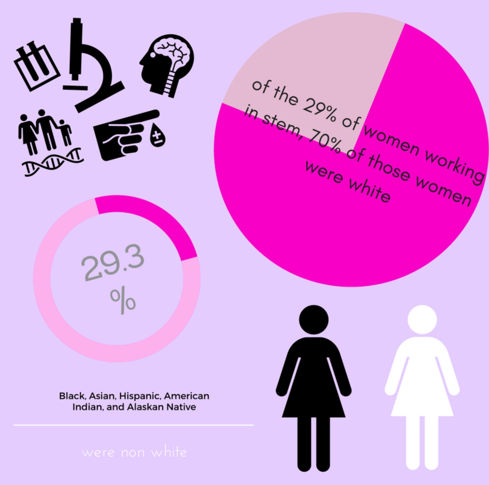

The Reality of Women in STEM
What is STEM?
STEM refers to a field of careers involving the use of problem solving and critical/ analytical thinking. This is applied to the areas of science (S), technology (T), engineering (E), and mathematics (M). Essentially, STEM is a web of different fields of careers incorporating these aspects.
STEM fields build off each other.
Intersectionality is a huge aspect of STEM and often the different branches interact and apply to each other. You can see this in fields such as medicine where doctors, who generally have science backgrounds, are using machines coded and built by people from both the technology and engineering branches of STEM. This can lead to advances in these three divisions, even though the origin was in the mathematical field.
We interact with STEM everyday.
Some examples of careers in the STEM field include:
Women in STEM.
It isn’t difficult to see the importance and practicality in careers in the STEM field. It should be beneficial then to have diverse employees in such fields in order to create the enhance the application of products and services to the population; yet, when looking at the involvement of varying genders, there is one glaring pattern: women are not are present in these fields as men.

https://blogs-images.forbes.com/bonniemarcus/files/2014/06/stem-facts-on-women-girls.jpg

Women of Color in STEM.
Another aspect that is important to keep in mind when thinking of women's involvement in STEM, is women of color and their involvement in STEM. Often minority groups are overlooked when creating programs aimed at integrating women into STEM fields.

Science.
What is science?
Science is the study of the natural world and the living things surrounding us.
Scientists observe both the physical and natural aspects of the world by researching, observing, sampling, experimenting, analyzing.
Careers.
astronomers: scientists who study the "physics of the sky"
biochemists: scientsist who study living things and concepts of biology as well as chemical processes and reactions
physicians: (also referred to as human doctors), treat and cure human illnesses and diseases of the body
veterinarians: physicians that work to treat and cure illnesses in animals

Technology.
What is technology?
Technology uses math, science, and engineering to communicate certain ideas, expressions, messgaes, and details. There are many different types of communication that can be learned through education of computer science, a major aspect of technology. In computer science especially, creativity is essential to developing ideas and communticating efficently. By creating, analyzing and replicating code, there is no limit to what we can create.
Careers.
web developers: people who create designs and applications for the Internet
computer programmers: people who write programs and create or write codes for computers
database administrators: those who design diffrent software and work closely with databases while storing data
data analysists: those who interpret and collect data, translating the numbers into simpler terms

Engineering.
What is engineering?
Engineering is a category of science in which design, construction, technology, machines and structure is integrated together in order to form an application of the combined to solve problems and create practical articles.
Careers.
web developers: one who creates and upkeeps web pages
engineers: those who strategize and oversee the building of tunnels, roads, bridges and other architectural structures
computer programmers: those who arrange the codes in order for computers to process and interpret data.

Mathematics.
What is mathematics?
Mathematics is the science that analyzes the reasoning and rationality of shapes, amount of an object or substance, and arrangement of numbers and patterns.
Careers.
stockbrokers: those who implement and manage the sales and trading of stocks and bonds
accountants: those who manage and assist businesses in their financial ventures
actuaries: people who aid in the planning of financial endeavors in the case of a tragedy or misfortune.